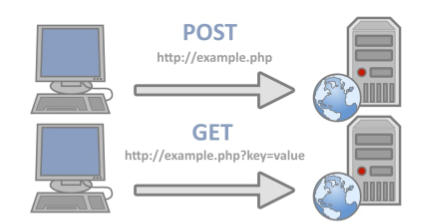
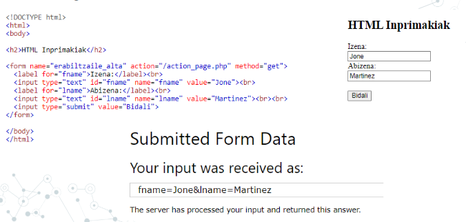
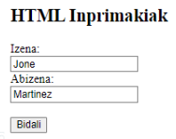
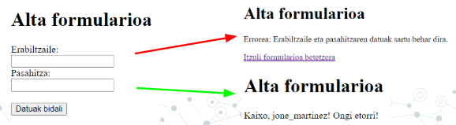
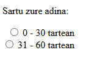
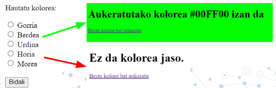
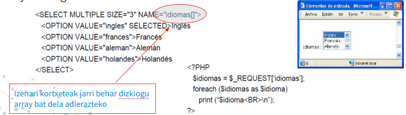
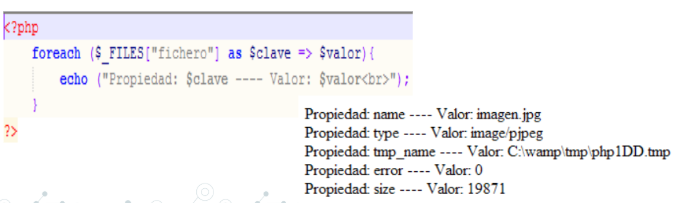
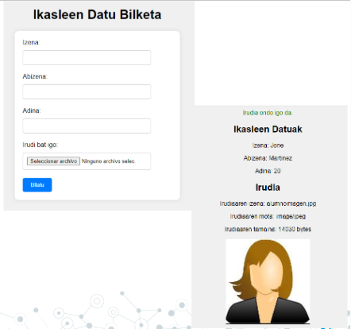

3. UNITATEA - FORMULARIOAK¶
3. Web programazioa PHPrekin¶
Inprimakiak (Formularioak)¶
Inprimakiei esker ahal diegu erabiltzaileei informazioa eskatu eta beraiekin harremana izan.
Formulario HTML bat <form> eta </form> etiketen artean definitzen da.
<form action="/my-handling-form-page" method="get | post"></form>
Hurrengo elementuetatik jasotzen ditugu datuak:
INPUT
TEXT
RADIO
CHECKBOX
BUTTON
FILE
HIDDEN
PASSWORD
SUBMIT
SELECT
SIMPLE
MULTIPLE
TEXTAREA
HTTP METODOAK - GET eta POST metodoak¶
Hauek biak badira HTTP protokoloaren metodoak, zerbitzaria eta bezeroaren arteko informazio-trukea egiteko. Badaude bat baino gehiago, baina hauek biak dira ohikoenak:

GET metodoa¶
Metodo horrek eskatzen dio web-zerbitzariari, bezeroari identifikatutako informazioa URL eskaeran itzultzeko.
- GET metodoak URLan bidaltzen ditu aldagaiak.
- URL bukaeran galdera (?) ikurria jarriko genuke eta jarraian aldagaia eta bere balioa.
- Aldagai bat baino gehiago izanez gero
&sinboloa erabiliko dugu.
https://www.google.com/search?q=zer+da+php&rlz=1C1GCEB_enES1021ES1021&oq=zer+da+php&aqs=chrome..69i57j69i60l3.3326j0j15&sourceid=chrome&ie=UTF-8
POST metodoa¶
POST metodoan informazioa kodeatuta dago HTTP eskaeraren gorputzean, eta, beraz, ezkutuan bidaiatzen du. Horregatik, metodo hau, erabiltzailearen informazioa formulario baten sartu nahi dugunean erabili beharko genuke.
https://moodle.fptxurdinaga.eus/my/
GET vs POST konparaketa¶
| Ezaugarria | GET | POST |
|---|---|---|
| Parametroak | URIan daude | Gorputzean daude |
| Helburua | Dokumentuen berreskurapena | Datuen eguneraketa |
| Segurtasuna | Faborito bezela markatzeko aukera | Ezin da faborito moduan gorde |
| Datu motak | ASCII karaktereak bakarrik | Edozein datu mota (baita bitarrak ere) |
| Ikusgarritasuna | URLan ikusgai | Ezkutuan |
| Tamaina mugak | ~2000 karaktere | ~8MB |
$_REQUEST¶
$_REQUEST array asoziatiboak $_GET, $_POST eta $_COOKIE arrayen edukia biltzen du.
- Erabilera aurrekoen modukoa da, aldagai superglobala da ere.
$_REQUEST, array asozitiboa $_GET, $_POST eta $_COOKIE arrayen edukiak dituena.- Erabilera ohikoena izango da ez dakigunean zein metodoa erabili duen datuak bidaltzen dituen formularioak.
- Berez ez da datuak bidaltzeko metodo bat, ezin dugu formularioan method=REQUEST jarri.
FORM - Atributuak¶
Gogoratuko ditugu FORM elementuaren atributu garrantzitsuenak, batez ere guk informazio elkartrukea egitearakoan nahitaez erabiliko ditugunak:
- Name: Honetan formularioaren identifikazioa izango dugu, gogoratu orrialde bakar baten formulario bat baino gehiago izan ditzakegula.
- Action: Atributu honetan jarriko dugu gure datuak jasoko duen fitxategiaren url
- Method: get / post. Hauek dira izan ditzakeen balioak, beraz hemen adieraziko dugu zein den aukeratu dugun metodoa.
Adibidea¶
Hurrengo adibidean, GET metodoa erabilida:

Nola jasotzen ditugu datuak?¶
Gure formularioak bidaltzen duen informazioa jasotzeko, erabiliko dugu $_POST[] edo $_GET[] array asoziatiboak segun kasua zein den.
Aurreko adibidean, action_page.php scriptera deitzerakoan, $_GET[] arrayan sortu dira bi sarrera, fname eta lname identifikatzaileekin. Beraz, bi datu horiek jasotzeko, horrela egin genezakeen:
// GET metodoa erabiliz
$izena = $_GET["fname"];
$abizena = $_GET["lname"];
// POST metodoa erabiliz
$izena = $_POST["fname"];
$abizena = $_POST["lname"];
Badago aukera ere $_REQUEST arraya erabiltzeko, batzutan intesgarria izan daitekeelako ez jakitea zein metodo erabili duen formularioak. Baina gomendioa izango da ahal den heinean $_POST[] edo $_GET[] erabiltzea.
Hauek guztiak dira PHPrekin aldagai globalak. Gogoratu, PHPko aldagai super globalak edonondik eskura daitezke eta informazio espezifikoa gordetzen dute horietan, kasu hauetan formularioan bidalitako datu guztiak.
Ariketa UD3 - 1
- Eginda dut
Sortu ariketa1.php formulario bategaz. Formulario horrek deituko du ariketa1_jaso.php fitxategiari, eta honek datuak jasoko ditu eta ongi etorria emango dio pertsona horreri.
Gutxi gora behera itxura hau izan beharko du:

isset() eta empty() funtzioak¶
isset()¶
Funtzio honek esango digu ia aldagaia definitu den ala ez, baiezko kasuan true bueltatuko du.
Oso funtzio erabilgarria da jakiteko ia formulario bateko daturen bat bidali den ala ez. Ez du konprobatzen balio bat duen ala ez, naiz eta hutsik egon, true emango bait du
if (isset($_GET['izena'])) {
$izena = $_GET['izena'];
} else {
$izena = 'Gonbidatua';
}
isset() - Modu modernoan
Gaur egun isset() erabiltzerakoan, ez da horrela egiten, hori modu klasikoa da.
php
$izena = $_GET['izena'] ?? 'Gonbidatua';
Operadorea isset() + baldintzapeko esleipena egiten duen gauza bera egiten du, baina modu dotoreagoan.
Ezkerreko aldea ebaluatzen du, eta nulua bada edo ez badago, eskuineko aldearen balioa itzultzen du.
empty()¶
Funtzio honekin jakin dezakegu aldagai batek balioa duen ala ez.
Aldagai bat dago hutsik ez baldin bada existitzen edo bere balioa false baldin bada.
if (!empty($adina)) {
$mezua = $adina . ' urte dituzu';
} else {
$mezua = 'Adina ez da zehaztu';
}
empty() - Modu modernoan
empty-ren kasuan pixkatxo bat ezberdina da, oraindik ez dago operadore zuzenik.
php
$mezua = !empty($adina) ? $adina . ' urte dituzu' : 'Adina ez da zehaztu';
Zelan erabiliko genituzke biak elkarrekin?¶
Programatzerakoan, oso ohikoa da biak elkarrekin erabili behar izatea, kasu horretan horrela egingo genuke:
Modu klasikoan
if (isset($_POST['helbidea']) && !empty($_POST['helbidea'])) {
$helbidea = $_POST['helbidea'];
} else {
$helbidea = 'Helbidea ez da zehaztu';
}
Modu modernoan
$helbidea = ($_POST['helbidea'] ?? '') ?: 'Helbidea ez da zehaztu';
// Goiko hau da izango zen honen modukoa:
// $helbidea = (isset($_POST['helbidea']) && !empty($_POST['helbidea'])) ? $_POST['helbidea'] : 'Helbidea ez da zehaztu';
Laburpena
| Egoerak: | Klasikoa | Modernoa |
|---|---|---|
isset() |
isset($var) ? $var : $default |
$var ?? $default |
empty() |
!empty($var) ? $var : $default |
Ez dago operadorerik |
| Biak | isset($var) && !empty($var) ? $var : $default |
($var ?? '') ?: $default |
Ariketa UD3 - 2
- Eginda dut
Sortu formulario bat, izena, abizena eta emaila jasotzen dituena, baina kasu honetan POST metodoa erabili.
Formulario honen deia ariketa2_post.php fitxategiari izango da.
Datuak jasotzerakoan, konprobatuko dugu datuak jaso ditugun ala ez.
Datuak izatekotan, erakutsi datuak pantailan, bestela daturen bat falta dela idatzi.
(isset() eta empty() funtzioak erabili hori konprobatzeko)
Ariketa UD3 - 3
- Eginda dut
Alta formulario bat sortu, erabiltzailea eta pasahitza eskatzen dituen formularioa, POST metodoarekin.
Fitxategi bakar baten egin behar da, beraz, lehenengo aldian formularioa erakutsi, baina datuak bidali izatekotan, konprobatu datu biak sartu dituen ala ez.
Biak sartu ezkero Ongi Etorria emango diogu, bestela datu biak behar ditugula esango diogu:
Adibidea:

Inprimakien elementuak¶
Aurreko adibideetan ikusi dugu zelan jasotzen diren INPUT text baten balioak, gainontzeko kasuetan antzeko izango da, ala ere hainbat adibide ikusiko ditugu.
INPUT TYPE="radio"¶
* Horrela idatzi beharko genuke formularioan:
<form action="/action_page.php">
<p>Sartu zure adina:</p>
<input type="radio" id="age1" name="age" value="30">
<label for="age1">0 - 30 tartean</label><br>
<input type="radio" id="age2" name="age" value="60">
<label for="age2">31 - 60 tartean</label><br>
</form>
* Horrela jasoko genuke elementu horren balioa gure php-an:
$adina = $_GET[“age”];
echo $adina; // aukeratu duen aukeraren “value” hartuko du, gogoratu value hori ez dela pantailan erakusten

Ariketa UD3 - 4
- Eginda dut
Sortu bi fitxero, bat ariketa4.php eta bigarrena ariketa4_kolore.php. Lehenengo fitxategiak izan behar du formulario bat radiobutton bategaz 5 koloreen artean bat aukeratzeko. Koloreak hexadecimalean egon behar dute.
ariketa4_kolore.php fitxategiak, kolorea jasoko du eta fondoaren kolorea, jasotako kolorea izango du.
Adibidea:

INPUT TYPE="checkbox"¶
Checkbox-en kasuan, elementu bat baino gehiago aukeratu daitekeenez, datu hori jasotzean, array baten egingo dugu, beraz izenean ere kortxeteak jarriko ditugu, array bat dela adierazteko.
* Horrela idatzi beharko genuke formularioan:
<input type="checkbox" name="vehicle[]" value="Bike">
<label for="vehicle1"> Bizikletaz</label><br>
<input type="checkbox" name="vehicle[]" value="Car">
<label for="vehicle2"> Kotxez</label><br>
* Horrela jasoko genuke elementu horren balioa gure php-an:
$vehicles = $_GET["vehicle"];
foreach($vehicles as $vehicle) {
echo "<p>".$vehicle ."</p>";
}
Ariketa UD3 - 5
- Eginda dut
Sortu formulario bat checkboxes-ekin hainbat aukera aukeratzeko. Aukeratutako elementuak zerrenda moduan erakutsi.
SELECT¶
Kasu honetan, select arrunta bada, gaionontzeko elementuekin moduan jasoko dugu, balioa value propietatean duena da
Baina select multiple elementua izatekotan, hau da, balio bat baino gehiago hartu dezakenean, array baten gordeko ditu balioak.

INPUT TYPE="file"¶
Mota honetako datuak bidaltzeko, beti POST metodoaren bidez egin behar da, eta jasotzeko, badago aldagai globala $_FILES izenekoa.
Kontutan izan behar dugu ia "php.ini" fitxategian, file_uploads = on dagoen jarrita, horrek fitxeroan bidali daitezkela adierazten du
Formularioak ere hurrengo atributu hau behar du enctype="multipart/form-data", esateko zein edukiera mota erabili formularioa bidaltzeko.
Fitxategia array asoziatibo baten gordeko da, lehenengo klabea fitxategiaren izena izango da eta bigarrena fitxategi horren datuak.
$_FILES["fileToUpload"]["tmp_name"]
[fitxategi_izena] => Array
(
[name] => MyFile.jpg
[type] => image/jpeg
[tmp_name] => /tmp/php/php6hst32 //PHPk ematen dio behin behineko izen bat zerbitzariaren diskan gorde arte
[error] => UPLOAD_ERR_OK // Adierazten du ia errore baten bat egon den kargatzerako orduan
[size] => 98174 // Fitxategiaren pisua bytesen adierazita
)
* Horrela idatzi beharko genuke formularioan:
<form method="POST" enctype="multipart/form-data">
<input type="file" name="fitxategia">
</form>
* Horrela jasoko genuke elementu horren balioa gure php-an:
$fitxategia = $_FILES['fitxategia'];
$izena = $fitxategia['name'];
$tmp_izena = $fitxategia['tmp_name'];
if (move_uploaded_file($tmp_izena, "img/" . $izena)) {
echo "Fitxategia ondo igo da";
} else {
echo "Errorea fitxategia igotzean";
}
Zelan egin dezakegu hau seguruago izateko?¶
Aurreko adibideak funtzionatzen du, baina ez da guztiz segurua. Fitxategiak igotzean, erabiltzailearengandik jasotako informazioaz ezin gara fidatu.
Hainbat arazo izan ditzakegu:
-
Jatorrizko fitxategi-izena erabiltzea ⚠️
php $izena = $fitxategia['name']; // ARRISKUTSUA!Erabiltzaileak bidalitako izenaz ezin gara fidatu. Adibidez, bide edo fitxategi-izen arriskutsuak bidaltzen saia daiteke.
-
Igoerako erroreak ez egiaztatzea ⚠️
php $_FILES['fitxategia']['error']Fitxategia behar bezala igo den egiaztatu behar dugu.
-
Fitxategi motak ez mugatzea ⚠️
Nahi dugun edozein fitxategi mota igotzea saihestu behar dugu.
-
Fitxategiaren benetako mota ez egiaztatzea ⚠️
Fitxategiak
.jpgluzapena izateak ez du esan nahi benetan JPEG irudi bat denik. -
Fitxategiaren tamaina ez mugatzea ⚠️
Fitxategi handiegiak igotzea saihestu behar dugu.
HTML formularioa¶
HTMLn erabiltzaileari zein fitxategi mota onartzen diren adieraz dezakegu:
<form method="POST" enctype="multipart/form-data">
<input
type="file"
name="fitxategia"
accept=".jpg,.jpeg,.png,.gif,.pdf"
required
>
<input type="submit" value="Igo fitxategia">
</form>
Kontuz
accept atributuak erabiltzaileari laguntzen dio fitxategia aukeratzen, baina ez da segurtasun-neurri nahikoa. Zerbitzarian ere fitxategia egiaztatu behar dugu.
PHP kodea¶
<?php
// 1. Fitxategia behar bezala igo den egiaztatu
if (!isset($_FILES['fitxategia']) ||
$_FILES['fitxategia']['error'] !== UPLOAD_ERR_OK) {
die("Errorea: fitxategia ez da behar bezala igo.");
}
$fitxategia = $_FILES['fitxategia'];
// 2. Tamaina mugatu (5 MB)
if ($fitxategia['size'] > 5 * 1024 * 1024) {
die("Errorea: fitxategia handiegia da.");
}
// 3. Luzapena egiaztatu
$baimendutako_luzapenak = ['jpg', 'jpeg', 'png', 'gif', 'pdf'];
$luzapena = strtolower(
pathinfo($fitxategia['name'], PATHINFO_EXTENSION)
);
if (!in_array($luzapena, $baimendutako_luzapenak)) {
die("Errorea: fitxategi mota ez da baimendua.");
}
// 4. Fitxategiaren benetako mota egiaztatu
$finfo = finfo_open(FILEINFO_MIME_TYPE);
$mime_mota = finfo_file($finfo, $fitxategia['tmp_name']);
finfo_close($finfo);
$baimendutako_mime_motak = [
'image/jpeg',
'image/png',
'image/gif',
'application/pdf'
];
if (!in_array($mime_mota, $baimendutako_mime_motak)) {
die("Errorea: fitxategiaren edukia ez da baimendua.");
}
// 5. Izen berri eta segurua sortu
$izen_segurua = uniqid('fitx_') . '.' . $luzapena;
$helburu_osoa = "img/" . $izen_segurua;
// 6. Direktorioa existitzen den egiaztatu
if (!is_dir('img/')) {
mkdir('img/', 0755, true);
}
// 7. Fitxategia mugitu
if (move_uploaded_file($fitxategia['tmp_name'], $helburu_osoa)) {
echo "Fitxategia ondo igo da.";
} else {
echo "Errorea fitxategia igotzean.";
}
?>
Gogoratu¶
Fitxategi bat igotzean:
- Ez fidatu erabiltzaileak bidalitako fitxategi-izenaz.
- Egiaztatu igoerako erroreak.
- Mugatu fitxategiaren tamaina.
- Mugatu onartutako luzapenak.
- Egiaztatu fitxategiaren benetako MIME mota.
- Sortu fitxategiarentzat izen berri bat.
- Erabili
move_uploaded_file()igotako fitxategia mugitzeko.
HTMLko
acceptatributua erabiltzaileari laguntzeko da; benetako segurtasun-kontrolak zerbitzarian egin behar dira.
Ariketa UD3 - 6
- Eginda dut
Sortu formulario bat fitxero bat igotzeko.
Jasotzerakoan fitxategia, konprobatu $_FILES aldagaiak jasotzen dituen datu guztiak eta pantailan inprimatu.
Adibidea:

Ariketa UD3 - 7
- Eginda dut
Aurreko ariketan oinarrituta, konprobatu fitxategiak 1MB baino gehiago pisatzen duen.
Gehiago pisatuz gero "Errorea: Fitxategia handiegia da" mezua erakutsi, bestela "Fitxategia ondo igo da".
Ariketa UD3 - 8
- Eginda dut
Sortu formulario bat ikasleen datu bilketarako (ariketa8.php). Izena, abizena, adina eta irudi bat.
Irudia "img" karpetan sartu behar dugu. Fitxategi berak datuak jasoko ditu eta erakutsiko ditu. Gogoratu irudia ere erakutsi behar duela.
Modu seguru baten egiten saiatu.
Adibidea:

Balidazioak¶
Formulariok kudeatzerakoan ezinbestekoa da balidazioak egitea, dokumentu honetan topatuko dituzue kontutan izateko hainbat gauza: